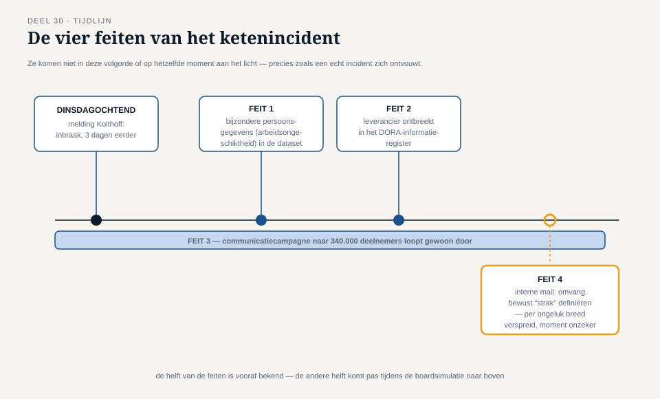
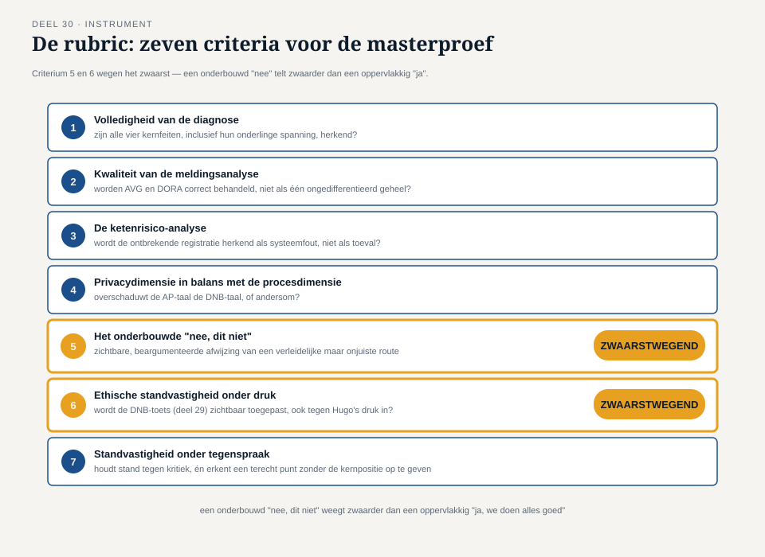

Deel 30 — Masterproef: het ketenincident
Slidedeck · Ductus-cursus Informatiebeveiliging en privacy · niveau 3 · deel 30 van 30 · 24 slides
Slide 1 — Titel
Informatiebeveiliging en Privacy
Deel 30 · Niveau 3 · Expert · Twee dagdelen
Masterproef: het ketenincident
Sluitstuk van de hele cursus
Slide 2 — Negen maanden voor de deadline
1 januari 2028. Invaren van de laatste fondsen.
Communicatiecampagne naar 340.000 deelnemers.
Slide 3 — Dinsdagochtend
Dennis Kolthoft, leverancier van het deelnemersportaal:
een inbraak, ontdekt drie dagen geleden.
Slide 4 — Vier feiten, gaandeweg

- Bijzondere persoonsgegevens geëxfiltreerd
- Leverancier niet in het DORA-register
- Een lopende communicatiecampagne
- Een interne mail — "strak" definiëren?
Slide 5 — Niet allemaal tegelijk bekend
Zoals een echt incident zich ontvouwt.
DAGDEEL A — Het schriftelijk advies
Slide 6 — De opdracht
Maximaal 10 pagina's. Gericht aan het bestuur.
Zeven verplichte onderdelen.
Slide 7 — Zeven onderdelen
- Feitenoverzicht en triage
- Meldingsanalyse (AVG + DORA)
- Ketenrisico-analyse
- Privacydimensie
- De communicatievraag
- De interne mail
- Prioritering met kruisverwijzingen
Slide 8 — Verplicht
Minstens één onderbouwd "nee, dit niet".
Slide 9 — [Werktijd: schriftelijk advies]
Individueel, circa 2 uur.
Slide 10 — Wat de docent let op
Worden de zeven onderdelen behandeld in samenhang —
of als losse checklist-items?
DAGDEEL B — De boardsimulatie
Slide 11 — Vier rollen

Hugo Prins — bestuurder, tijdsdruk
DNB-toezichthouder — feitelijk, precies
Sanne — rechtmatigheid, individuele rechten
Dennis Kolthoft — leverancier, eigen belangen
Slide 12 — 45 minuten
Helft van de vragen vooraf bekend.
Helft onvoorzien — tijdens de simulatie zelf.
Slide 13 — Hugo's verleiding
Niet vijandig. Wél vatbaar voor:
"kunnen we dit niet snel en behapbaar houden?"
Slide 14 — Sanne houdt vast
Rechtmatigheid, ook — juist — onder tijdsdruk.
Accepteert geen uitstel "tot na de drukte".
Slide 15 — Kolthoft verdedigt zich
Niet de enige schuldige.
Het ketenregister ontbrak ook door Meridiaans eigen ketenbeheer.
Slide 16 — [Boardsimulaties, roulerend]
Slide 17 — De rubric: zeven criteria

- Volledigheid van de diagnose
- Kwaliteit van de meldingsanalyse
- De ketenrisico-analyse
- Privacy in balans met proces
Slide 18 — De rubric, vervolg
- Het onderbouwde "nee, dit niet"
- Ethische standvastigheid onder druk
- Standvastigheid onder tegenspraak, met redelijkheid
Slide 19 — Het zwaarstwegende principe
Een onderbouwd "nee" weegt zwaarder
dan een oppervlakkig "ja, we doen alles goed".
Door de hele Ductus-familie heen. Hier, voor het laatst.
Slide 20 — [Nabespreking per simulatie]
Slide 21 — Slotreflectie
Welk instrument uit welk deel bleek onmisbaar?
Welk eerder moment voelde het meest verwant?
Waar was "aanwezig ≠ aantoonbaar ≠ werkend" het scherpst zichtbaar?
Slide 22 — Van deel 1 tot hier
Merels eerste rondgang. Verlopen accounts. Testomgevingen.
Het datalek. De uitzondering zonder vervaldatum.
Governance. DORA. Toezicht. Audit. Ethiek.
Slide 23 — Eén samenhangende manier van kijken
Niet losse feiten. Eén manier van vragen stellen en beslissen —
die negen jaar (in de casus) overeind is gebleven.
Slide 24 — Einde van de cursus
Informatiebeveiliging en Privacy.
Dertig delen. Drie niveaus. Eén rode draad.
Aanwezig is niet aantoonbaar. Aantoonbaar is niet werkend.